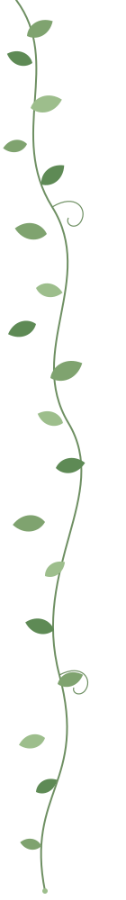
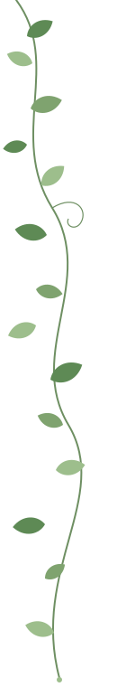

CIMemories Dialogue
A two-agent dialogue benchmark for contextual-integrity violations — the testbed behind Loose Lips.
repo →

Benchmarks, theory and the unglamorous infrastructure that makes the experiments possible.
A two-agent dialogue benchmark for contextual-integrity violations — the testbed behind Loose Lips.
repo →Extending BARDec-POMDP to agents that turn adversarial with probability β — what cooperation still means when a teammate might not be one.
write-up →A bulk vLLM inference pipeline plus scripts for scoring privacy leakage across model families.
repo →Research internship on a framework for privacy-preserving secure multi-party computation.
project →